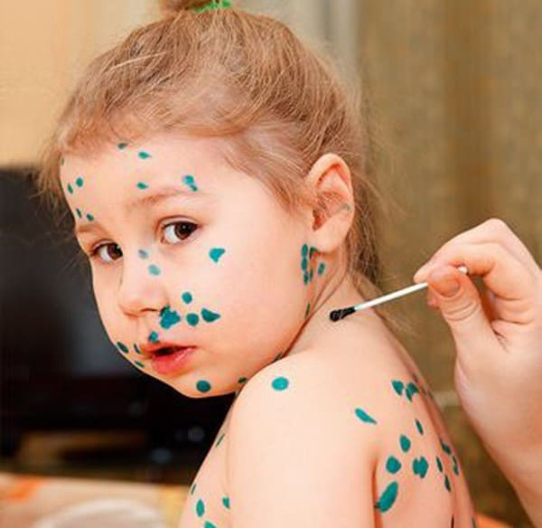
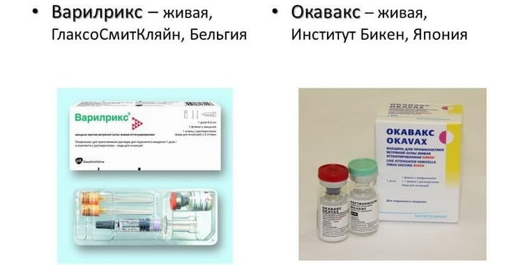
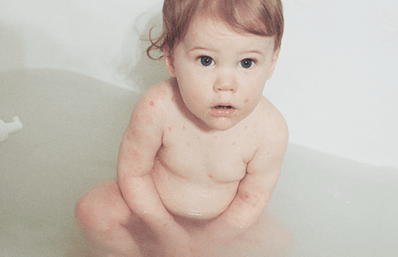
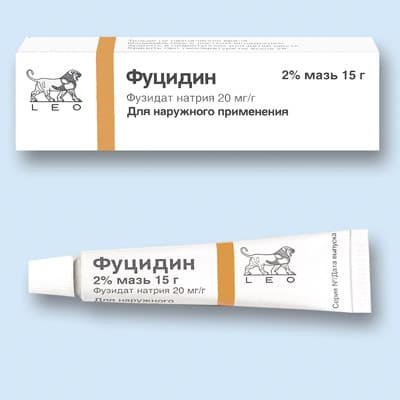
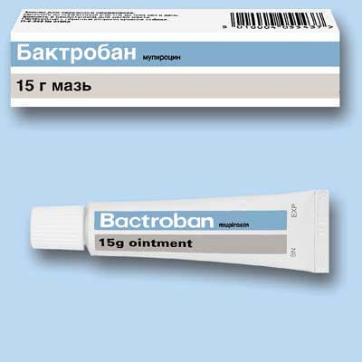
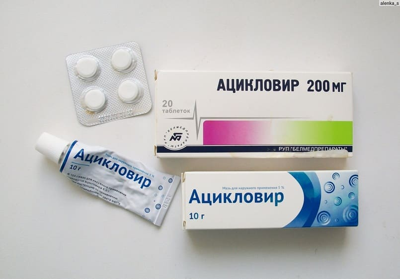

Все знают эту болезнь. Даже тот, кто не имеет детей и кто совсем ничего не знает о педиатрии, с легкостью ответит на вопрос, что такое ветрянка: это пузырьковая сыпь, которая невыносимо чешется, сопровождается повышением температуры и которую в России обычно мажут зеленкой.

В мире давно разработана вакцина против ветряной оспы, многие страны с развитой медициной включили ее в перечни обязательных прививок для детей. В этих странах вспышки ветряной оспы стали редкостью, осложнения от этой болезни почти перестали регистрироваться. Но Россия к этим странам пока не относится, увы. У нас карантин в саду по ветрянке – это что-то обыденное: не бывает, наверное, ни одного детского сада, где бы этот карантин не объявлялся хотя бы раз в год. Ветрянка иногда дает неприятные осложнения, но даже без осложнений течет довольно неприятно, поэтому лучшим вариантом будет ввести ребенку вакцину против ветряной оспы и защитить его заранее.
Очень тяжело ветряная оспа течет у людей старше 14 лет, поэтому они особенно нуждаются в вакцинации, если не болели ранее. Обсудите это с вашим педиатром.
Если ребенок все же заболел, первое и главное, что вы должны сделать, – выбросить в помойку бестолковые устаревшие красители (зеленку, фукорцин и т. д.) и купить эффективные и современные препараты: Каламин или Поксклин. На худой конец (если не нашли или если дорого) купите старую, добрую болтушку Циндол. Стоит она три рубля за ведро, есть в каждой крупной аптеке.
Если вы не уверены, болели ли вы, – сдайте анализ на антитела IgG к ветряной оспе; если их титр достаточно высок, то ветрянка вам не страшна, если нет – поспешите привиться.
Нанесение этих средств снимает зуд и предотвращает вторичные бактериальные инфекции, а значит, снижает риск грубых рубцов на месте сыпи. Дети, мучимые сильным зудом, сами просят: «Мама, намажь еще», это лучшее свидетельство эффективности.
Второе и главное: всех людей, находившихся в контакте с заболевшим и не имеющих иммунитета (не болевших и не вакцинированных), срочно (чем раньше, тем лучше, но не позднее пятого дня от первого контакта с заболевшим) нужно не позднее трех-пяти суток вакцинировать против ветряной оспы. Это предотвратит болезнь или снизит ее тяжесть.

Третье и главное: мыться при ветрянке МОЖНО И НУЖНО! Душ принимать несколько раз в день, только без мочалки – губкой или рукой, чтобы не сдирать пузырьки. Душ ничем не опасен, снимает зуд и предотвращает вторичные инфекции. Во всех международных клинических руководствах душ больным ветрянкой настоятельно рекомендован.

Четвертое: при сильном зуде давайте ребенку антигистаминные препараты (супрастин, зодак и т. д.), обсудите с врачом какие.
Пятое: при вторичных бактериальных инфекциях кожи (импетиго) используйте антибактериальные мази (бактробан, фузидин или др.).


Шестое: ацикловир эффективно убивает вирус ветряной оспы, но изначально здоровым детям он не показан; он назначается только детям из группы высокого риска. Обсудите это со своим врачом, если потребуется.

Здоровые люди не могут передать ветрянку. Ветрянкой можно (и довольно легко) заразиться только от больного человека (в том числе через систему вентиляции). Но если вы были в гостях и там кто-то болел ветрянкой, не бойтесь идти домой к своему ребенку: вирус гибнет вне организма восприимчивого человека за считаные минуты.
Простое пятиминутное проветривание после больного ветряной оспой делает кабинет педиатра полностью чистым от вируса и безопасным для других детей.
Сыпь появляется «толчками» (резко повышается температура до 38–40, появляется 10–40 новых пузырьков, температура снижается, и на 3–8 часов наступает затишье, затем новый «толчок»). Старые элементы лопаются, мокнут, покрываются корочками, а в это время появляются новые. Сыпь бывает не только на коже, но и на слизистых (рот, конъюнктива, вульва и т. д.).
Заболевший ветряной оспой начинает выделять вирус (заражать других) за сутки до появления сыпи и продолжает около 10 дней от первого высыпания (или около пяти от последнего).
После перенесенной ветрянки остается пожизненный иммунитет. Иногда можно услышать о том, что кто-то болел ветрянкой дважды, но чаще всего это была диагностическая ошибка – пузырьки на коже может вызывать не только вирус ветряной оспы (см., например, главу 14). Длительность иммунитета после адекватной вакцинации оценить пока невозможно, предполагается, что это 10–20 лет. Возможно, будущие исследования приведут к тому, что мы будем назначать бустерную (ревакцинирующую) дозу через 10–20 лет, но пока бустеры не рекомендованы.
Редкими осложнениями ветряной оспы являются ветряночные менингоэнцефалиты. При появлении сильных головных болей и пугающей вялости и слабости срочно покажите ребенка врачу.
(Сергей Бутрий "Здоровье ребенка: современный подход")